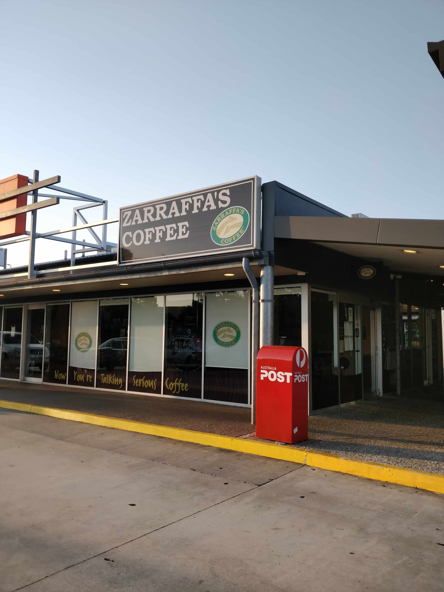

1. Seafood Takeaway
$
The best hot chips in Springwood are sold here from a minimum of $3.50 – but so worth it! Battered or crumbed cod along with their burgers are quite popular.
2. Sushi Train
$$
Perfect restaurant for a meal with friends or family. The moving conveyor belt and open kitchen are both interesting to watch.
3. Little Red Dumpling
$$$
This Chinese restaurant has many yummy options in their dumpling range. The price range is a bit higher, so this is likely a family visit only.
4. Zaraffas's Coffee
$$
Even though their drinks are mostly coffee, the coffee-free drinks (e.g. caramel or chocolate fusion) are delicious.
5. Chatswood Bakery
$
Here’s a good place to go with a low budget after school. The pies and sweet pastries are not too bad.